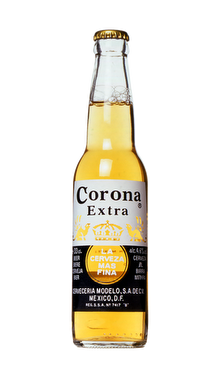

| Beer Image |
Name |
Description |
Price
|
|  |
Corona Extra 330ml |
Corona Extra is a pale lager produced by Cervecería Modelo in Mexico
for domestic distribution and export to all other countries besides the United States. |
$1.90 |
 |
Stella Artois 500ml |
Stella Artois is a Belgian pilsner of between 4.8 and 5.2% ABV
which was first brewed by Brouwerij Artois (the Artois Brewery)
in Leuven, Belgium, in 1926. Since 2008, a 4% ABV version has also
been sold in Britain, Ireland, Canada and New Zealand |
$2.00 |
 |
Carlsberg 500ml |
Carlsberg A/S is a global brewer. Founded in 1847 by J. C. Jacobsen,
the company's headquarters is located in Copenhagen, Denmark. Since Jacobsen's
death in 1887, the majority owner of the company has been the Carlsberg Foundation. The company's flagship brand is Carlsberg. |
$3.00 |
 |
Heineken 500ml |
Heineken N.V. is a Dutch brewing company,
founded in 1864 by Gerard Adriaan Heineken in Amsterdam. As of 2017,
Heineken owns over 165 breweries in more
than 70 countries. |
$1.80 |